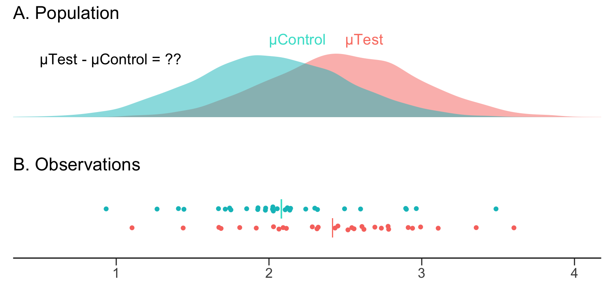

Bootstrap Confidence Intervals
Sampling from Populations
In a typical scientific experiment, we are interested in two populations (Control and Test), and whether there is a difference between their means \((\mu_{Test}-\mu_{Control})\)

We go about this by collecting observations from the control population, and from the test population.

We can easily compute the mean difference in our observed samples. This is our estimate of the population effect size that we are interested in.
But how do we obtain a measure of precision and confidence about our estimate? Can we get a sense of how it relates to the population mean difference?
The bootstrap confidence interval
We want to obtain a 95% confidence interval (95% CI) around the our estimate of the mean difference. The 95% indicates that any such confidence interval will capture the population mean difference 95% of the time.
In other words, if we repeated our experiment 100 times, gathering 100 independent sets of observations, and computing a 95% confidence interval for the mean difference each time, 95 of these intervals would capture the population mean difference. That is to say, we can be 95% confident the interval contains the true mean of the population.
We can calculate the 95% CI of the mean difference with bootstrap resampling
The bootstrap in action
The bootstrap[1] is a simple but powerful technique. It was [first described] (https://projecteuclid.org/euclid.aos/1176344552) by Bradley Efron.
It creates multiple resamples (with replacement) from a single set of observations, and computes the effect size of interest on each of these resamples. The bootstrap resamples of the effect size can then be used to determine the 95% CI.
With computers, we can perform 5000 resamples very easily.

The resampling distribution of the difference in means approaches a normal distribution. This is due to the Central Limit Theorem: a large number of independent random samples will approach a normal distribution even if the underlying population is not normally distributed.
Bootstrap resampling gives us two important benefits:
Non-parametric statistical analysis. There is no need to assume that our observations, or the underlying populations, are normally distributed. Thanks to the Central Limit Theorem, the resampling distribution of the effect size will approach a normality.
Easy construction of the 95% CI from the resampling distribution. For 1000 bootstrap resamples of the mean difference, one can use the 25th value and the 975th value of the ranked differences as boundaries of the 95% confidence interval. (This captures the central 95% of the distribution.) Such an interval construction is known as a percentile interval.
Adjusting for asymmetrical resampling distributions
While resampling distributions of the difference in means often have a normal distribution, it is not uncommon to encounter a skewed distribution. Thus, Efron developed the [bias-corrected and accelerated bootstrap] (https://en.wikipedia.org/wiki/Bootstrapping_(statistics)#History) (BCa bootstrap) to account for the skew, and still obtain the central 95% of the distribution.
DABEST applies the BCa correction to the resampling bootstrap distributions of the effect size.
Estimation plots incorporate bootstrap resampling
The estimation plot produced by DABEST presents the rawdata and the bootstrap confidence interval of the effect size (the difference in means) side-by-side as a single integrated plot.

It thus tightly couples visual presentation of the raw data with an indication of the population mean difference, and its confidence interval.
[1]: The name is derived from the saying “pull oneself by one’s bootstraps”, often used as an exhortation to achieve success without external help.